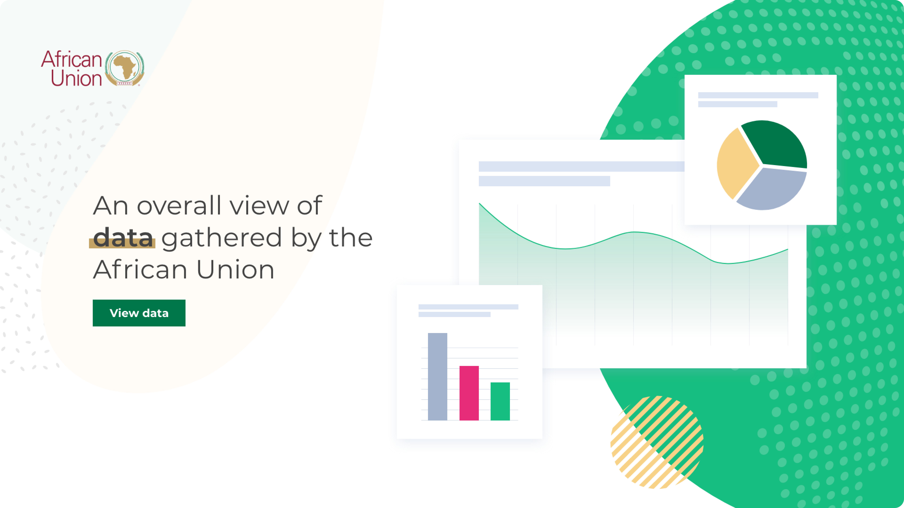
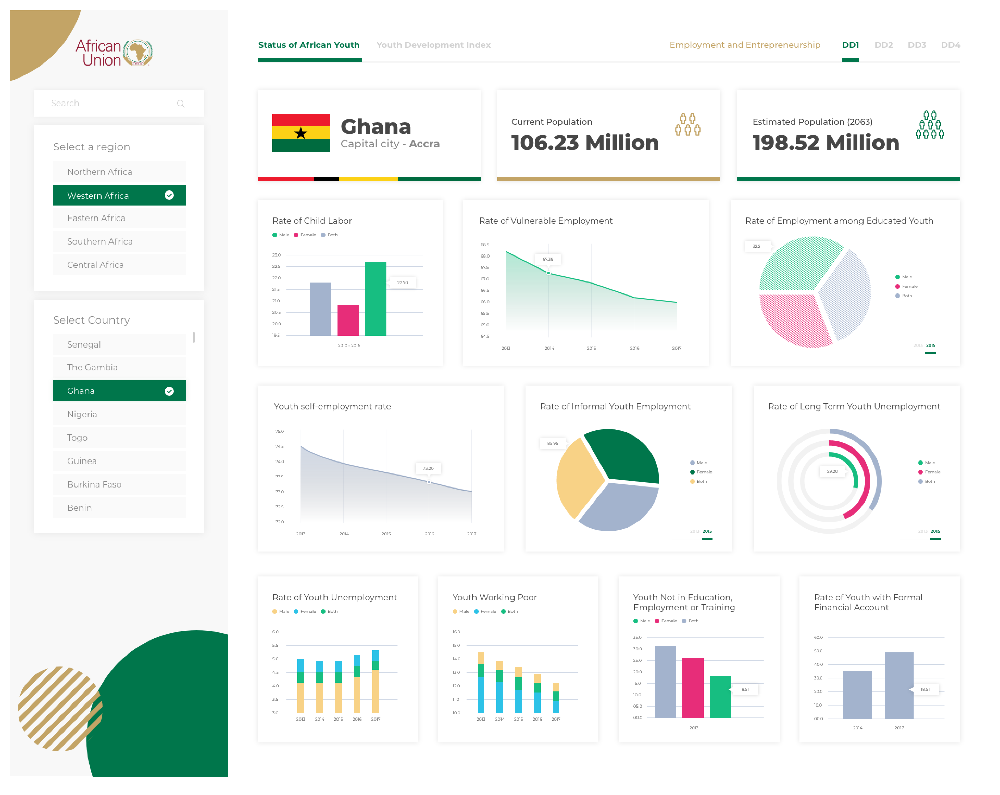
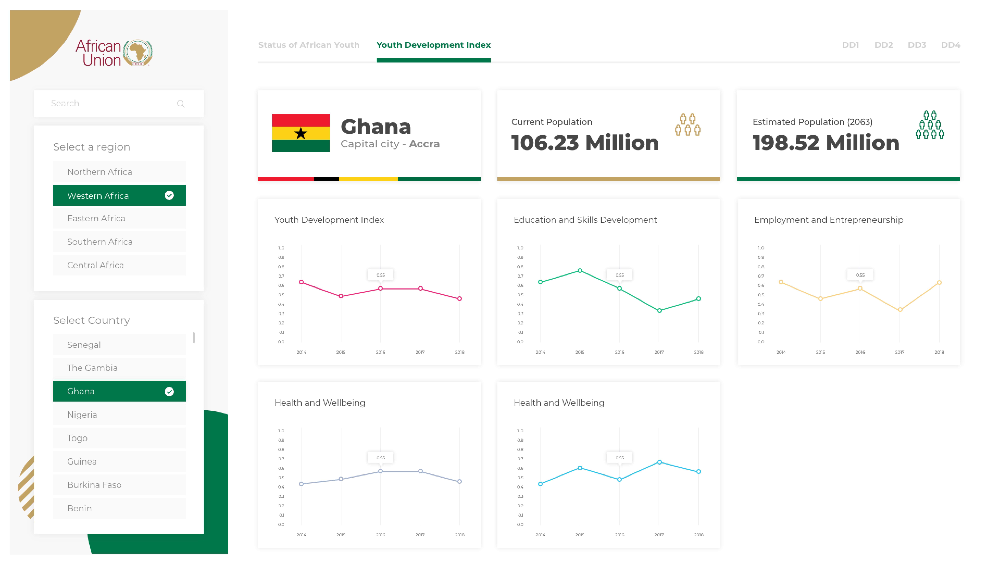

Overview
The Status of African Youth Report (SoAYR) provides an understanding of the current landscape of youth issues and what policies and programmes exist to address these issues among African Union (AU) Member States. It also examines the impact of interventions and aids in optimizing evidence-informed policy creation to strengthen the capacity of AU Member States to respond to youth development considerations and to produce stronger and more desirable results. The SoAYR is therefore crucial in delivering the goal of youth development and empowerment, which feeds into the overall development of the continent.
Problem
The report and the Data collected by the African Union team was in a Power Bi format and not readily accessible by the public, which defeats the purpose of the data collection. The report is exhaustive and needs to be simplified for anyone who decides to use the data to create innovative solution.
Task
I was tasked with reading and understanding the data provided as well as simplifying it and presenting it in a graphical format that would be understandable for users.
Responsibilities
- Simplify the data and make it more accessible.
- Create charts and infographic mock up and template which the data would represent the data that will be inputed from the back end by the developers.
- Design an intuitive user interface.
- Maintain African Union brand colors.
- Develop a dashboard with an overview of key informations.
- Design a downloadable format of selected data.
Solution
User Flow:
I Created a user flow that simplifies how the data will be accessed. I broke down the data in to 5 regions. For each regions, users can select the country they want to view and see their data. Users can choose to share data or download in a pdf format. The data for The Status of African Youth Report of each country are segmented into four pillars; DD1, DD2, DD3 and DD3. There is also a section that display the Youth Development Index for each country.
Abbreviations and Keywords:
YDI - Youth Development Index
DD 1 - Employment and Entrepreneurship (Pillar 1)
DD 2 - Education and Skill Development (Pillar 2)
DD 3 - Health and Well-Being (Pillar 3)
DD 4 - Right, Governance and Empowerment (Pillar 4)
Wireframe
I created same wireframe screens to share with the client the major scenarios and to highlight the simple steps user would need to take to access the data they need.
Landing page
I designed a two variation for the landing page; a static page with chart illustration and an animated landing page that randomly hovers around the Africa map and randomly selects a country to display a brief information. The client went with the first option with the illustrated chart.


Selecting Region and Country
Users first select a region from one of the five regions in Africa (West, East, North, South and Central), User can then hover on the region to select the country they want to view. Below is a short clip on how interactive selecting a country is.
Dashboard Design
In designing the dashboard, I ensured that navigation is intuitive. You can change region and countries as well as select which type of data you want to view. I also ensured the different pillars are on top of the screen so users can see it at a glance. I made use of easy to understand, color coded infographics and graphs. See below for some selected screens.




Downloadable File
As part of the task, it is important that after-viewing the data in single format. Take for instance, "Rate of Child Labour", users should be able to download the file in a well laid-out pdf format. I designed the layout and can be seen in the next screen below.
Conclusion
I was glad when I was contacted by the "Contractor" to work on this project for The African Union and was very eager to get to work as soon as possible. I was provided with the power BI format of the data and had to do a mini power bi training on Youtube before I could find my way around it. I learnt about a new environment as well as understanding complex data and breaking them down into smaller bit for proper visualization. While I had no say over the development (Coding) of the project, I ensured that I carried out some test to check out some key performances. 23 people participated and here below are how the project performed.
Key Performance Test
- Ease of Navigation: 18 people found it easy to navigate the program and the feedback we got from the users led to me adding a search bar on the dashboard. Some testers made the observation that it would also be faster to just search for a specific country data.
- Intuitiveness: On first use, 17 people found it very intuitive and know what exactly to look for. The major complains are the coded pillars (DD1, DD2, DD3, DD4). Not everyone understood what it meant, and this led to me including the title of each pillar on top of the dashboard.
- Usefulness: 20 people agreed that the format in which the data was presented was readable and would be useful for them if they were to embark on a project that needs such data. They were impressed with the download option and layout of the downloadable pdf file.
- Aesthetics: All 23 tester were of high praise of the User Interface design. It was on brand in terms of colors but also could be a stand alone product due to how clean and different it looks from traditional African union website.
View prototype
here and visit African Union Site
here
Made With